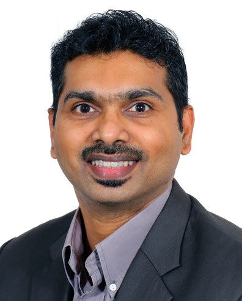
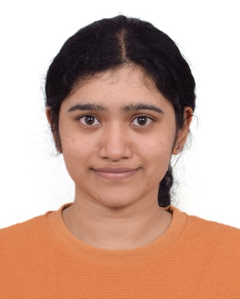
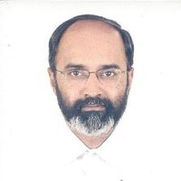
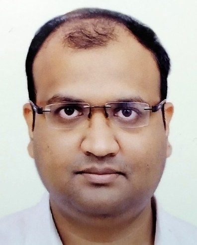

Mahanim Biologics brings together microbiome biology, multi-omics and medical AI to take MANTRA from discovery to the clinic.

Technology and business leader with three decades of experience building and commercialising advanced technologies across the US, China and India, including 24 years at Intel. He built and led INAI, the public–private applied-AI institute established by Intel India, IIIT Hyderabad and the Government of Telangana, bringing together engineers, clinicians, researchers and government to develop population-scale AI for healthcare and mobility. His career includes leading major semiconductor and consumer-electronics programmes and leading Intel's effort behind India's first RISC-V silicon with IIT Madras. He brings deep expertise in technology commercialisation, strategic partnerships and translating advanced research into deployed products.
Technology and business leader with three decades of experience building, commercialising and scaling advanced technologies across the US, China and India, including 24 years at Intel Corporation. His career spans deep-technology architecture, product development, business development and applied artificial intelligence, with a particular track record of taking research-intensive technologies from concept through deployment.
At Intel India, he built and led INAI, a public–private applied-AI research institute established by Intel India, IIIT Hyderabad and the Government of Telangana. Under his leadership, INAI brought together engineers, clinicians, researchers and government stakeholders in a multidisciplinary team of around 50 people, developing and deploying AI systems at population scale. Its work included AI-enabled oral cancer screening and cardiovascular risk prediction in healthcare, as well as road-safety technologies for mobility.
Earlier in his career, he led the development and commercialisation of Intel's first successful consumer-electronics system-on-chip, and was instrumental in securing the largest IP set-top-box order placed by a telecom operator worldwide. He also led Intel's effort behind India's first RISC-V silicon in collaboration with IIT Madras.
He brings to Mahanim Biologics a rare combination of deep-technology expertise, large-scale commercialisation experience and the ability to build multidisciplinary research programmes that translate advanced AI from laboratory research into real-world systems.

Computational biologist at the intersection of biology, computation and translational research, with over six years of experience spanning toxicology, clinical modelling, medical imaging and multi-omics. Her work has taken her across leading academic, clinical and pharmaceutical institutions including Imperial College London, the University of Edinburgh, Charing Cross Hospital and AstraZeneca Cambridge, working with multidisciplinary teams across the UK and India. Author of 16 scientific publications, including 14 with Springer Nature, spanning microbiome science and computational biology. She is a lead editor of a Frontiers in Physiology Research Topic on the microbiome and cancer-treatment side effects.
Computational biologist working at the intersection of biology, computation and translational research, with experience spanning both wet-lab and dry-lab science. Over six years, she has developed computational approaches across toxicology, clinical modelling, medical imaging and multi-omics, working across leading academic, clinical and pharmaceutical environments in the UK and India, including Imperial College London, the University of Edinburgh, Charing Cross Hospital and AstraZeneca Cambridge.
Her work has involved multidisciplinary and multinational collaborations across academia, hospitals and industry, translating complex biological and clinical data into computational models and actionable scientific insights. She is the author of 16 scientific publications, including 14 with Springer Nature, with a research record spanning microbiome science and computational biology. She is a lead editor of a Frontiers in Physiology Research Topic on the microbiome and cancer-treatment side effects.

Technologist, inventor and researcher with 28 years of experience across Philips Research, Silicon Hive and Intel. He invented the Video Signal Processor architecture at Philips Research, founded and led Silicon Hive's Bangalore operations through its acquisition by Intel, and subsequently worked on AI-driven analytics for multimodal healthcare and life-science data. His later research has focused on integrating microbiome and multi-omic data to move from disease association towards mechanistic understanding. He holds a PhD from IISc, 20 US patents and 60+ peer-reviewed publications, bringing decades of experience spanning deep-technology architecture, AI and translational life-science research.
Technologist, inventor and deep-technology researcher with 28 years of R&D experience spanning Philips Research in the Netherlands, Silicon Hive and Intel. His career has taken technologies from fundamental architecture and research through productisation and commercial deployment, with expertise spanning multimedia systems, computational architectures, machine learning and healthcare analytics.
At Philips Research, he invented the Video Signal Processor (VSP) architecture, which he subsequently helped commercialise through Silicon Hive. He founded Silicon Hive's Bangalore operations and led them as Director and Product Manager, transforming the technology into a commercial product platform subsequently deployed in Samsung's flagship television systems. Following Intel's acquisition of Silicon Hive in 2011, he held senior architecture and research roles at Intel.
His later work increasingly focused on healthcare and life-science analytics, including the use of AI and deep learning to interrogate multimodal biological and clinical data. His research has centred on integrating multi-omic information from the human host and its microbial communities to move beyond statistical correlation towards mechanistic understanding of disease. He has collaborated extensively with academic researchers, technology companies and healthcare organisations, and has mentored doctoral and master's researchers across Europe and India.
He holds a PhD from the Indian Institute of Science, awarded with the institute's medal for best doctoral thesis, and is an inventor on 39 patents with more than 60 peer-reviewed publications. He brings to Mahanim Biologics decades of experience turning sophisticated computational architectures and scientific ideas into technologies with real-world impact, together with deep expertise in multimodal AI, microbiome research and multi-omic healthcare analytics.

Associate Professor of Electrical Engineering at IIT Kharagpur and researcher in medical imaging, computer vision and machine learning, with expertise in applying deep learning and computational imaging to healthcare. DAAD Visiting Scholar at the Technical University of Munich, founder of SkinCurate Research, and inventor on internationally granted medical-imaging patents. His recognitions include the GE Edison Challenge, Fraunhofer Applications Award and Samsung Global Research Outreach Award; he is an IEEE Senior Member and served as Organizing Chair of IEEE ISBI 2022. His work brings deep expertise in AI-driven medical imaging and clinical computational systems to Mahanim Biologics' multidisciplinary research programme.
Associate Professor of Electrical Engineering at IIT Kharagpur and a researcher in medical imaging, computer vision and machine learning, with a focus on developing intelligent computational systems for healthcare. His research spans deep learning, computational imaging, biomedical systems and medical image analysis, with work addressing problems ranging from imaging physics and image reconstruction to automated diagnosis and clinical decision support.
He completed his PhD at IIT Kharagpur, with part of his doctoral research conducted at the Technical University of Munich as a DAAD Visiting Scholar. His research has produced internationally recognised work across medical imaging and computational healthcare, with publications in leading journals and conferences including Medical Image Analysis, IEEE Transactions on Biomedical Engineering and the IEEE International Symposium on Biomedical Imaging. He has also contributed to internationally granted intellectual property in medical imaging and computational diagnostics.
Alongside his academic work, he founded SkinCurate Research, a medical-imaging technology venture, and has led multidisciplinary research programmes connecting engineering, clinical medicine and industry. He has been involved in national-scale initiatives applying AI to healthcare, including work on AI-enabled radiology during the COVID-19 response. His recognitions include the GE Edison Challenge, Fraunhofer Applications Award and Samsung Global Research Outreach Award; he is an IEEE Senior Member and served as Organizing Chair of IEEE ISBI 2022.
He brings to Mahanim Biologics deep expertise in medical imaging, machine learning and the translation of computational research into clinically relevant technologies, complementing the company's expertise in biological data and multi-omics.